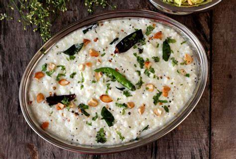

Homepage
Curd Rice

Description
To prepare daddo-janam (curd rice) with mash daal, start by cooking soft rice and letting it cool slightly,
then mix it with fresh curd (yogurt), a little salt, and a splash of milk to get a creamy consistency.
For the mash daal, pressure-cook moong daal or mash daal with turmeric and salt until very soft, then
mash it well; heat a little oil or ghee, add mustard seeds, cumin seeds, dried red chilies, curry leaves,
and a pinch of hing, and pour this tempering over the mashed daal, mixing gently. Serve the curd rice warm
or at room temperature, topped with the mash daal, and accompany it with pickle, green chilies, or a drizzle
of ghee for a comforting, traditional meal.
Ingredients
- Cooked rice (preferably soft, slightly mushy)
- Fresh curd (yogurt)
- Salt (to taste)
- Curry leaves
- Green chilies (finely chopped)
- Ginger (grated or finely chopped)
- Dry red chilies
- Asafoetida (hing)
- Oil or ghee
- Milk or water (to adjust consistency)
- Coriander leaves (for garnish)
Steps
- Cook rice until very soft and slightly mushy. Let it cool to warm or room temperature.
- Mash the cooked rice lightly with a spoon or hand.
- Add fresh curd to the rice and mix well until creamy.
- Add salt to taste and mix again.
- (Optional) Add a little milk or water to adjust consistency if needed.
- For tempering (optional):
- Heat oil or ghee in a small pan.
- Add mustard seeds and let them splutter.
- Add curry leaves, green chilies, ginger, dry red chilies, and a pinch of asafoetida.
- Sauté briefly.
- Pour the tempering over the curd rice and mix gently.
- Garnish with coriander leaves if desired.
- Serve fresh (or slightly chilled, if you prefer).